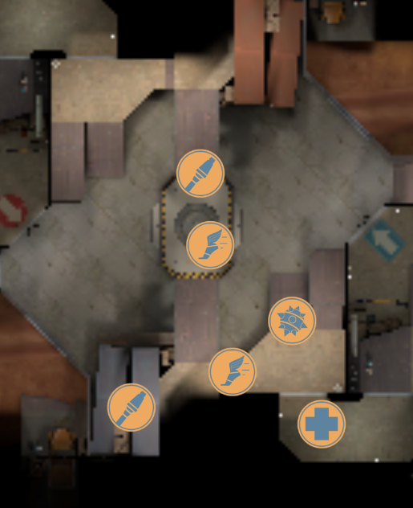
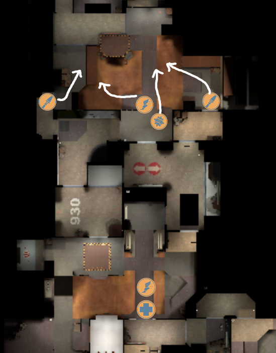

As roamer you can get deep in their valley grab alley pack, and then do a huge bomb back onto mid with no-one knowing, if someone does know then they can waste time on you.
Holding left can be good if they always rollout right side or come out of valley, it allows you to meet them there and collapse on them easier, typically you can have a setup like this:
When you have even ubers then there are a few different things you can do. In order to figure out what's a good idea and what is not, we just have to consider what happens after we make a decision. If we were to use uber to get into last, then we're throwing away an advantage
When you're pushing
Demo, flank scout, roamer and pocket soldier, all jump in trying to get their medic to use, make sure to call when you're jumping in using a 3 2 1 or by using the clock time, instead of string feeding in one at a time, that way their team will get overwhelmed and you can use that to your advantage to kill the med.
After doing the four man, there are two main outcomes, the first being you get their med to force, if that's the case then that's great for you, your goal will be to keep your pscout and med alive for the remaining time, once you have players back you now have uber advantage, but you'll have to be a little more careful as the other team might want to sac onto your med so get all your players healthy while watching doorways, then walk in and use the uber immediately so you don't lose your advantage.
The second outcome is if you do the four man, and you don't get the medic to use, if that occurs, then the enemy team will definitely push out of last onto your second which you will have to give up, but you will now most likely be holding mid on even ubers [TODO: need more details about this case]
Do this with a flank scout and roamer.
One soldier jumps out main and the other out right onto the soldier on right, try and kill him and get out immediately, that's the sac
The hard part about pushing out of this last is hard because it's long, from side to side so it's easy for someone to sneak behind and get to point and start a backcap quickly, also you'll need to heavily check for hiders on the left side so when your roamer is clearing that they should be careful as well, and more just spotting, if someone is there and they kill your roamer then its an issue because they can get to last and start the backcap. Ramproom the room at the bottom of the ramp has a few good hiding spots so don't forget to clear that too.